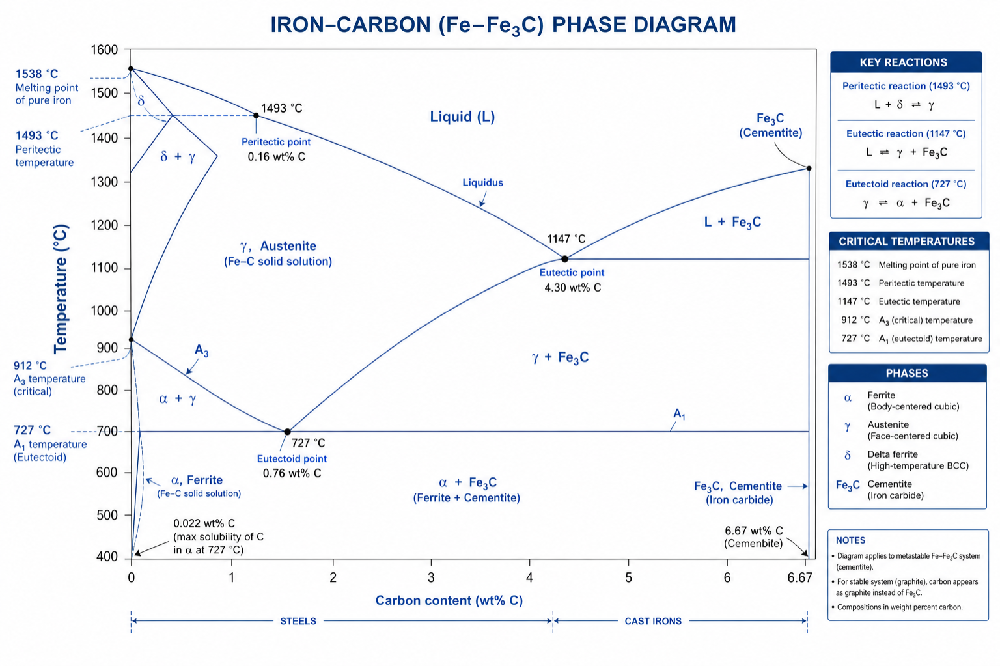
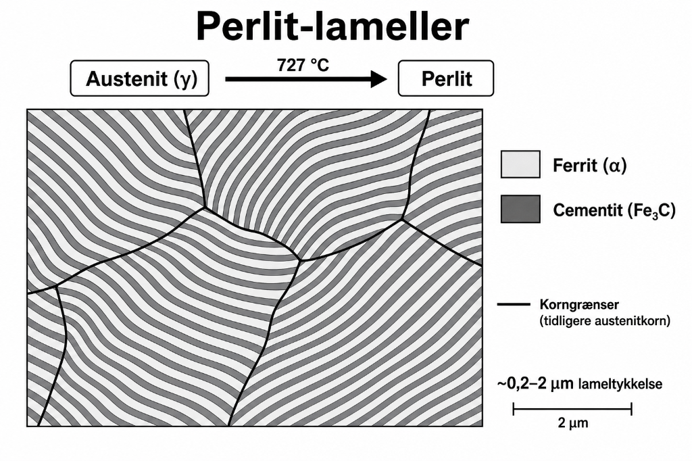
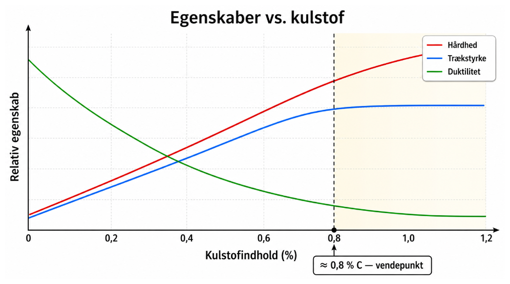
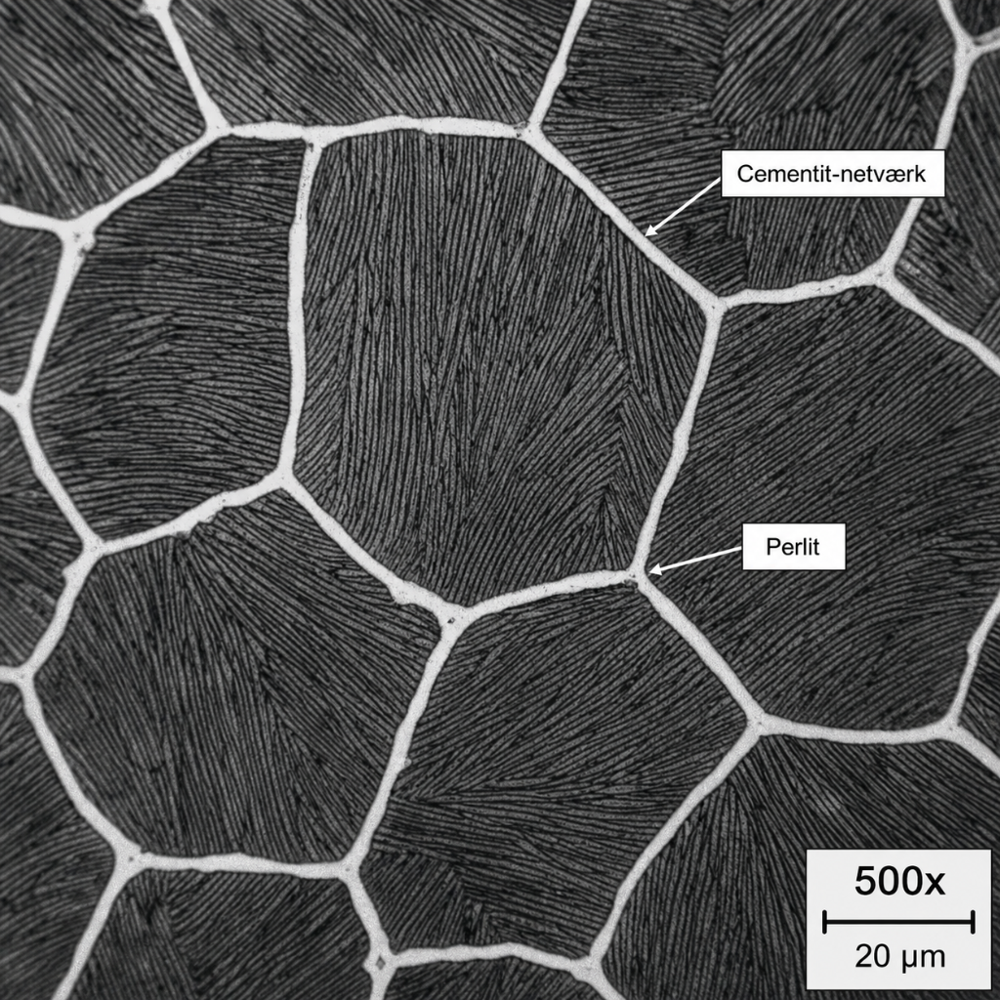

Materialelære 2 · Eksamenssæt forklaret
M-1 · Jern-kulstof-diagrammet og mikrostrukturer i stål
Ét-sidet overblik til 12-taller · Juni 2026
🏆
1 Spørgsmålet — hvad skal besvares?
- a) Opbygning af jern-kulstof-diagrammet + betydning af faser (austenit, ferrit, cementit, perlit) og linjer.
- b) Forklar eutektoid transformation — illustrér med skitseret fasediagram.
- c) Forskelle i mikrostruktur/egenskaber for under-eutektoidt vs. over-eutektoidt stål.
- d) Hvordan vægtreglen bestemmer faseandele i et to-fase-område.
- e) Sammenhæng mellem kulstofindhold, mikrostruktur og mekaniske egenskaber.
Til fremlæggelsen: aktiv brug af jern-kulstof-diagrammet forventes — peg på linjer og punkter undervejs.
2 Kernefakta — de fire faser
| Fase | Krystal | Maks. C | Egenskab |
|---|---|---|---|
| Ferrit (α) | BCC | 0,022 % | Blød, sej, duktil |
| Austenit (γ) | FCC | 2,14 % | Stabil >727 °C; basis for varmebeh. |
| Cementit (Fe₃C) | Ortorombisk | 6,67 % | Meget hård, sprød |
| Perlit | α + Fe₃C lameller | 0,76 % | Stærk, moderat sej |
Analogi: diagrammet er en "byggevejledning" — det viser hvilken krystalstruktur jern antager ved given temperatur og C-mængde.
3 Jern-kulstof-diagrammet
Billede mangler — indsæt i
images/M1_fig01_fe_c_diagram.png
images/images/M1_fig01_fe_c_diagram.png

Vigtige linjer: A₁ (727 °C) = eutektoid temp.; A₃ = grænse γ→(α+γ) for under-eutektoidt; A꜀ₘ = sekundær cementit ved >0,76 % C.
4 Eutektoid transformation
γ(0,76 %C) → α(0,022 %C) + Fe₃C(6,67 %C)
Billede mangler
images/M1_fig02_eutektoid.png
images/M1_fig02_eutektoid.png

Som vand→is ved 0 °C: austenit "fryser" til perlit ved 0,76 % C / 727 °C — begge faser dannes på én gang.
7 Kulstof ↔ egenskaber
Billede mangler — indsæt i
images/M1_fig05_egenskaber.png
images/images/M1_fig05_egenskaber.png

Vendepunkt: over ~0,8 % C dominerer sprødheden fra cementit-netværket — styrken stiger ikke længere meningsfuldt.
5 Under- vs. over-eutektoidt stål
Billede mangler
images/M1_fig03_hypoeutektoid.png
images/M1_fig03_hypoeutektoid.png

Billede mangler
images/M1_fig04_hypereutektoid.png
images/M1_fig04_hypereutektoid.png

6 Vægtreglen (Lever Rule)
Wperlit = (C₀ − 0,022) / (0,76 − 0,022)
Wferrit = (0,76 − C₀) / (0,76 − 0,022)
Eksempel — C₀ = 0,4 % C: Wperlit ≈ 51 %, Wferrit ≈ 49 %.
8 Korte svar — klar til eksamen
a) Faser?Ferrit (BCC, blød), austenit (FCC, opløser C), cementit (hård/sprød), perlit (α+Fe₃C-lameller).
b) Eutektoid?γ → α + Fe₃C ved 0,76 % C / 727 °C. Én fase bliver til to på én gang = perlit.
c) Under vs. over?Under: ferrit+perlit (sej). Over: cementit-netværk+perlit (hård/sprød).
d) Vægtreglen?Afstand til modsat ende / total afstand. Bestemmer vægtandel af hver fase.
e) C ↔ egenskaber?Mere C → hårdere/stærkere, mindre duktilt. Sprødhed dominerer >0,8 % C.
9 Huskeregler & referencer
Hurtige huskeregler:
- BCC = blød ferrit · FCC = austenit (opløser meget C).
- 0,76 % C & 727 °C = eutektoid-punktet — lær det udenad.
- Pro-eutektoid fase = den der danner sig før A₁ ved korngrænser.
Referencer:
- Fasediagrammer del 1–3 ·
MMT2/materialelærer/ - Callister & Rethwisch, 10. udg., Kap. 9 (s. 302–330) & Kap. 10 (s. 337–365)
- Kap04 — Varmebehandling og ståltyper